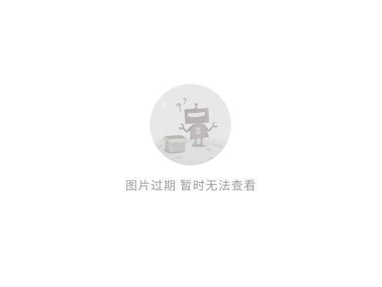

富士通 Arrows Tab F-01D

内置 LTE 与防水的日系运营商平板，小众市场的移动上网先锋。
客观评测
富士通这台日系平板的最大卖点是内置 LTE 模块，支持 docomo 的 Xi 网络，理论下行约 100Mbps，在 2012 年相当超前。10.1 英寸 1280×800 屏幕，高通 MSM8960 双核 1.5GHz 处理器，1GB 内存，电池容量接近 1 万毫安时，官方标称续航较长。整机具备防水能力，约 600 克、厚约 11 毫米，日本市场专供，国内极为罕见。
主观点评
方正硬朗的外观、实体按键与挂绳孔，透着浓浓的日系电子味。它并非为全球市场设计，却把平板随时在线的理念提前了许多年。随身携带时更像一本电子手账，插着数据线在线看视频的体验在当年颇为新潮。如今 eSIM 平板已成常态，回看这台略显古早的 Arrows Tab，反而像一份来自 2012 年的预言。
优点与不足
- 内置 LTE 随时上网在当时超前
- 大容量电池续航扎实
- 整机防水，使用场景更自由
- 机身厚重，边框较宽
- 系统本地化与应用适配薄弱
- 国内几乎无行货与售后
参数规格
| 屏幕 | 10.1 英寸 IPS 触摸屏 |
|---|---|
| 分辨率 | 1280×800 |
| 处理器 | 高通 MSM8960 双核 1.5GHz |
| 内存 | 1GB |
| 存储 | 16GB，支持 microSD |
| 网络 | LTE（docomo Xi），下行理论约 100Mbps |
| 系统 | Android 4.0 |
| 防护 | 支持防水 |
| 重量 | 约 600 克 |
| 厚度 | 约 11 毫米 |
| 电池 | 接近 10000mAh |
| 市场 | 日本运营商定制，国内罕见 |